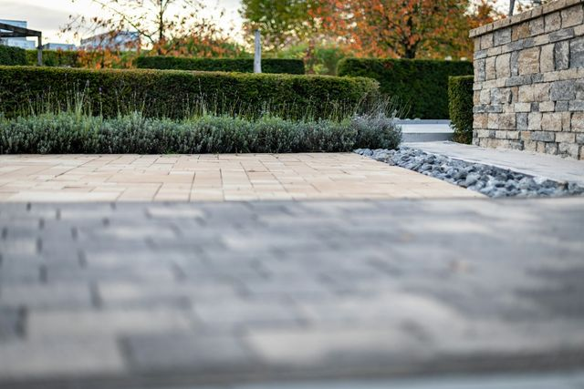
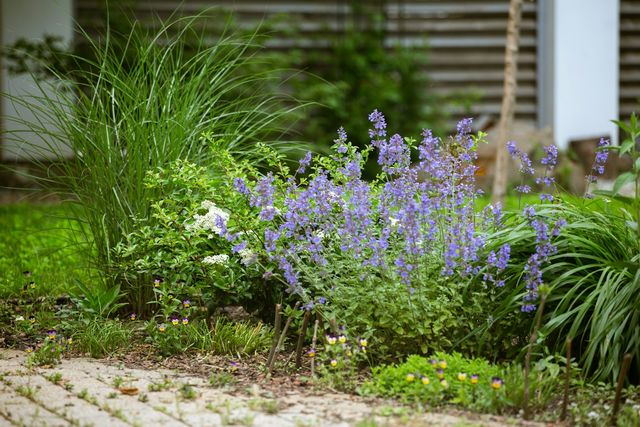
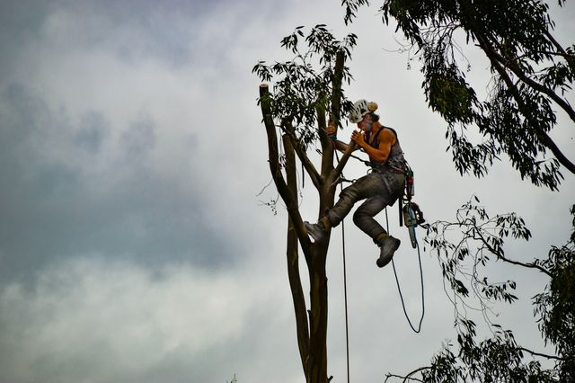
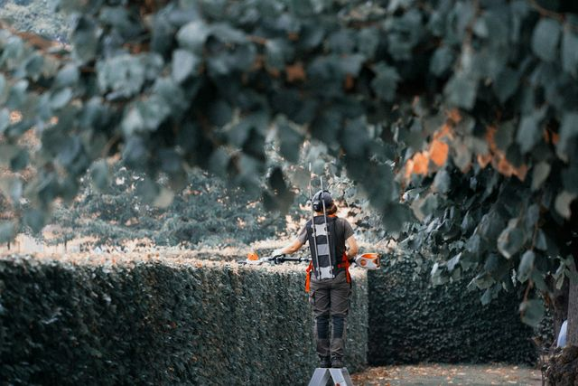
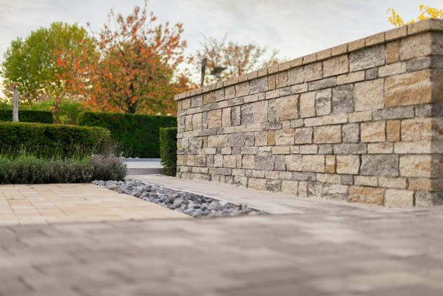
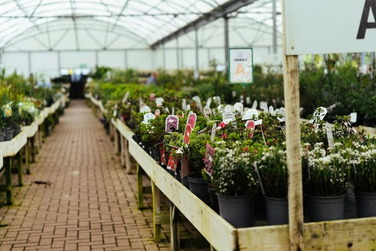

Beispielbild
1
Garten- und Landschaftsbau
Terrassen, Wege und Einfahrten, neu angelegt oder umgestaltet.
Garten- und Landschaftsbau aus Gronau-Epe
Wege und Terrassen, Pflanzen, Baumpflege und regelmäßige Pflege: Frank Morlak kümmert sich darum, vom Storker Hook in Epe aus. Zeigen Sie im Plan auf den Bereich, um den es Ihnen geht.Tippen Sie im Plan auf den Bereich, um den es Ihnen geht.

Beispielbild1 im Plan
Terrassen, Wege und Einfahrten, neu angelegt oder umgestaltet.
Das anfragen„Top Arbeit.“ „Super nett.“ „Viel Auswahl.“
4,9 ★★★★★ aus 16 Google-Bewertungen
Leistungen
1
Terrassen, Wege und Einfahrten, neu angelegt oder umgestaltet.

Beispielbild2
Pflanzen und Beete, die zu Ihrem Garten passen. „Viel Auswahl“, heißt es in einer Google-Bewertung.

Beispielbild3
Schnitt und Pflege, damit Bäume gesund und sicher bleiben.

Beispielbild4
Hecke, Rasen und Beete in Form halten, einmalig oder regelmäßig.
Aus der Arbeit
Im Entwurf mit Beispielbildern. Hier kommen Ihre eigenen Projektfotos hin, ein paar Handyfotos genügen.

Beispielbild
BeispielbildGartenanfrage
Ein paar Klicks und gern ein Foto. Frank Morlak sieht sofort, worum es geht, und ruft Sie zurück.
Kontakt
Kultur-, Garten- und Landschaftsbau
Storker Hook 13 A
48599 Gronau-Epe